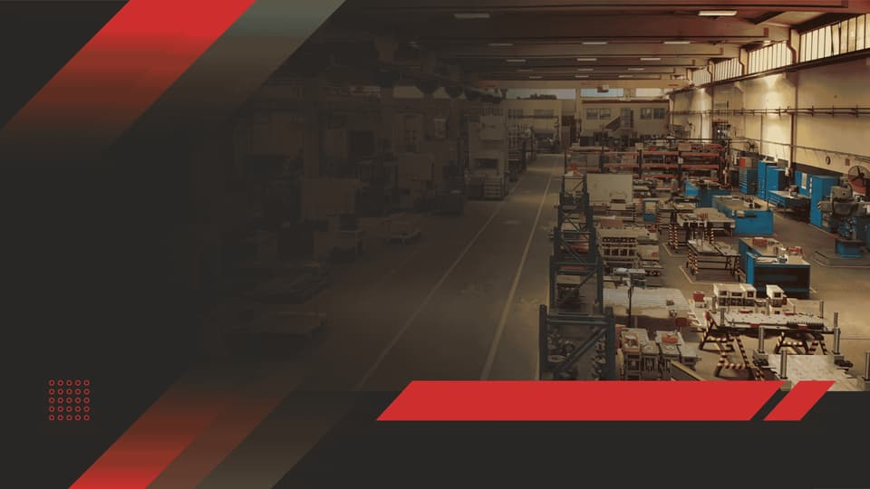
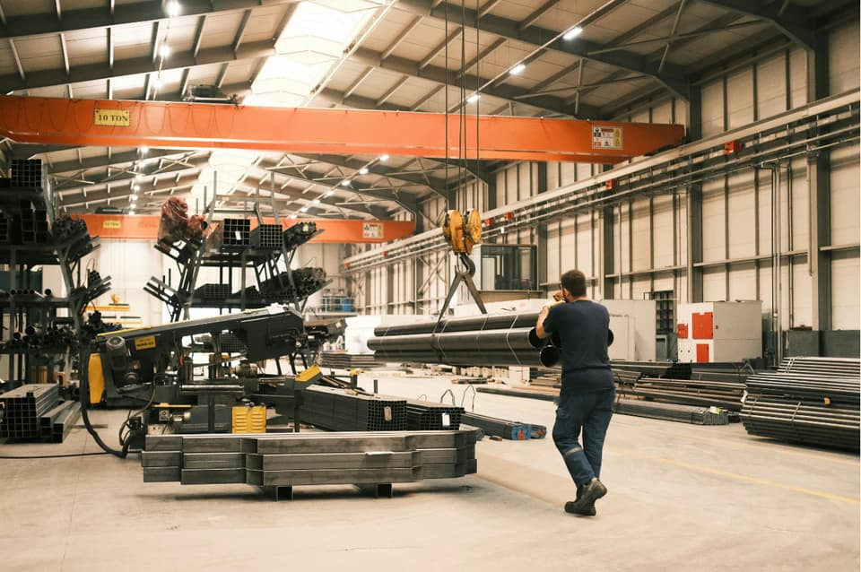
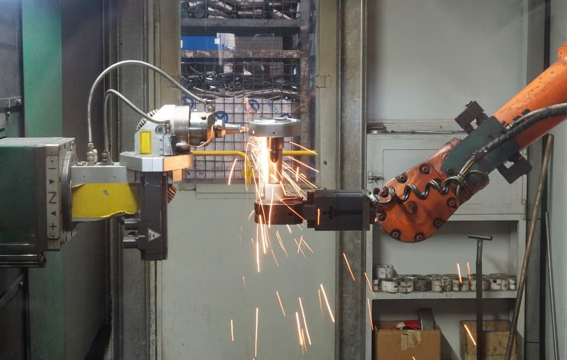

Secteur
Installations Industrielles & Maintenance des Équipements
Appui d’ingénierie pour usines, ateliers, entrepôts et installations techniques, avec un accent sur la disponibilité des équipements.

Les besoins que nous traitons dans ce secteur
- Diagnostic d’équipements et rapports d’inspection
- Plans de pièces de rechange critiques
- Recommandations de fiabilité et de performance
- Appui à la définition des besoins d’achat
Services
Les services les plus sollicités dans ce secteur
Conseil en Ingénierie
Validation de spécifications, analyse de conformité des équipements proposés et sélection de composants critiques adaptés aux conditions réelles d’exploitation.
En savoir plus
Fourniture d’Équipements & Sourcing Industriel
Fourniture de machines, d’équipements et de systèmes industriels complets, de packages clé en main, ainsi que de pièces de rechange et de composants critiques : identification, consultation fournisseurs, analyse comparative et livraison documentée.
En savoir plus
Études Techniques
Évaluations techniques, diagnostics d’équipements, plans et schémas, études comparatives et dossiers de consultation pour la planification, la conception ou la modernisation d’installations.
En savoir plusUn besoin technique à cadrer ?
Transmettez-nous une pièce à identifier, une machine ou une installation à fournir, un budget à construire ou un projet à cadrer. Nous revenons vers vous avec des questions de clarification, une proposition ou une offre formelle.